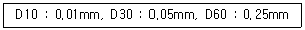
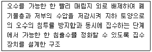
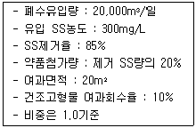
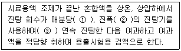
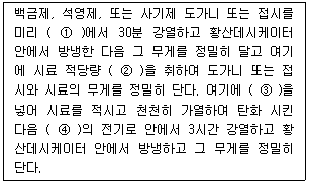
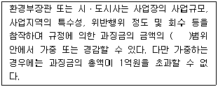
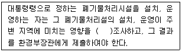
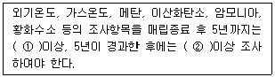

폐기물처리기사 (2007-09-02 기출문제)
1과목: 폐기물 개론
1. 쓰레기를 소각한 후 남은 재의 중량은 소각 전 쓰레기 중량의 약 1/3이다. 재의 밀도가 2.5t/m3 이고, 재의 용적이 3.3m3이 될 때의 소각 전 원래 쓰레기의 중량은?
- 22.3t
- 23.6t
- 24.8t
- 28.6t
(정답률: 알수없음)

2. 인구 10만명인 어느 도시에서 쓰레기를 소각처리하기 위해 분리수거를 하고 있다. 조사결과 아래와 같은 자료를 얻었을 때 가연성분 전량을 소각로로 운반하는데 필요한 차량은 몇 대 인가? (단, 쓰레기 조성 : 가연성 60Wt, 불연성 40Wt, 쓰레기 발생량 : 1.8kg/인ㆍ일, 쓰레기 차의 적재 밀도 : 0.6t/m3, 쓰레기 차의 적재 용량 : 4.3m3, 적재율 : 0.8, 수거차 일일 평균 왕복회수 : 3회/대ㆍ일)
- 17대
- 27대
- 37대
- 47대
(정답률: 알수없음)
3. 가정용쓰레기를 수거할 때 쓰레기통의 위치와 구조에 따라서 수거효율이 달라진다. 다음 중 수거효율이 가장 좋은 것은?
- 집 밖 이동식
- 집 안 이동식
- 벽면 부착식
- 집 밖 고정식
(정답률: 알수없음)
4. 도시 쓰레기의 수거 및 운반에 대해 기술한 아래 사항 중 틀린 것은?
- 언덕지역에서는 언덕의 꼭대기에서부터 시작하여 적재하면서 차량이 아래로 진해하도록 한다.
- 될 수 있으면 U자 회전을 피하여 수거한다.
- 적은양의 쓰레기가 발생하나 동일한 수거빈도를 받기를 원하는 적재지점은 가능한 한 같은 날 왕복내에서 수거하도록 한다.
- 가능한 한 반시계방향으로 수거노선을 정한다.
(정답률: 알수없음)
5. 선별기인 스토너(stoner)에 관한 설명으로 틀린 것은?
- 원래 밀 등의 곡물에서 돌이나 기타 무거운 물질을 제거하기 위하여 고안되었다.
- 공기가 유입되는 다공진동판으로 구성되어 있다.
- 상당히 넓은 입자크기분포 범위에서 밀도선별기로 작용한다.
- 중요한 운전변수는 다공판의 기울기와 공기의 유량이다.
(정답률: 알수없음)
6. 수분이 96%인 슬러지를 수분 60%로 탈수했을 때, 탈수 후 슬러지의 체적은? (단, 탈수 전 슬러지의 체적은 100m3이다.)
- 10m3
- 12m3
- 14m3
- 16m3
(정답률: 알수없음)
7. 폐기물 내 함유된 리그린의 양으로 생분해도를 평가하기 위한 관계식으로 적절한 것은? (단, BF : 생물분해성 분율(휘발성 고형분함량 기준), LC : 휘발셩 고형분중 리그린 함량(건조무게 %로 표시)
- BF=0.83-(0.028×LC)
- BF=0.83＋(0.028×LC)
- BF=0.83/(0.028×LC)
- BF=0.83×(0.028×LC)
(정답률: 알수없음)
8. 건식파쇄인 전단파쇄기에 관한 설명으로 틀린 것은?
- 주로 목재류, 플라스틱류 및 종이를 파쇄하는데 이용된다.
- 고정칼, 왕복 또는 회전칼과의 교합에 의하여 폐기물을 전단한다.
- 전단파쇄기는 헤머밀이 대표적이며 impact crusher 등이 있다.
- 충격파쇄기에 비하여 파쇄속도가 느리고 이물질의 혼입에 약하다.
(정답률: 알수없음)
9. 다음의 폐기물관리에 있어서 비용면에서 가장 많은 비중은 차지하는 것은?
- 저장
- 수거
- 자원화
- 운반장비
(정답률: 알수없음)
10. 함수율 75%의 하수슬러지 80m3와 함수율 40%의 톱밥 120m3을 혼합 했을 때의 함수율은? (단, 비중은 1.0 기준)
- 51%
- 54%
- 57%
- 59%
(정답률: 알수없음)
11. '손선별'에 관한 설명으로 틀린 것은?
- 선별의 정확도가 높다.
- 파쇄공정으로 유입되기 전에 폭발가능성이 있는 위험물질을 분류할 수 있다.
- 벨트폭은 한쪽에서만 작업하는 경우 60cm 정도로 한다.
- 작업효율은 2.5~5.0 ton/인ㆍ시간 정도이다.
(정답률: 알수없음)
12. 돌, 코르크 등의 불투명한 것과 유리같은 투명한 것의 분리에 이용되는 선별방법은?
- flatation
- optical sorting
- inertial separation
- electrostatic separation
(정답률: 알수없음)
13. 80ton/hr 규모의 시설에서 평균크기가 30.5cm인 혼합된 도시 폐기물을 최종크기 5.1cm로 파쇄하기 위한 동력은? (단, 평균크기를 15.2cm에서 5.1cm로 파쇄하기 위한 에너지 소모율은 15kWㆍhr/ton 이며, 킥의 법칙 이용)
- 약 1,500 kW
- 약 2,000 kW
- 약 2,500 kW
- 약 3,000 kW
(정답률: 알수없음)
14. 다음 중 관거를 이용한 쓰레기의 수송에 관한 설명으로 알맞지 않는 것은?
- 잘못 투입된 물건은 회수하기가 어렵다.
- 가설 후에 경로변경이 곤란하고 설치비가 높다.
- 자동화ㆍ무공해가 가능하고 눈에 띄지 않는다.
- 쓰레기의 발생밀도가 높은 지역은 현실성이 없다.
(정답률: 알수없음)
15. X90=4.6cm로 생활폐기물을 파쇄할 때, 즉 90% 이상을 4.6cm 보다 작게 파쇄 하고자 할 때, Rosin-Rammler 모델로 의한 특성입자크기 Xo(cm)는? (단, n=1)
- 1.0
- 1.5
- 2.0
- 2.5
(정답률: 알수없음)
16. 음식쓰레기 15톤이 있다. 이 쓰레기의 고형분 함량은 30%이고 소각을 위하여 수분함량이 20%가 되도록 건조시켰다. 건조 후 쓰레기의 중량은? (단, 쓰리기 비중은 1.0)
- 4.53톤
- 5.63톤
- 6.13톤
- 7.43톤
(정답률: 알수없음)
17. 쓰레기를 체분석하여 다음과 같은 결과를 얻었다. 곡률계수는? (단, D10, D30,D60 은 쓰레기 시료의 체 중량통과백분율이 각각 10%, 30%, 60%에 해당되는 직경임)

- 1.0
- 2.0
- 3.0
- 4.0
(정답률: 알수없음)
18. 쓰레기를 파쇄하여 매립할 때의 이점과 가장 거리가 먼 것은?
- 곱게 파쇄하면 매립시 복토가 필요없거나 복토요구량이 절감된다.
- 매립시 안정적인 혐기성 조건을 유지하면 냄새가 방지된다.
- 매립작업이 용이하고 압축장비가 없어도 고밀도의 매립이 가능하다.
- 폐기물 입자의 표면적이 증가되어 미생물작용이 촉진된다.
(정답률: 알수없음)
19. 습식파쇄방법인 냉각파쇄기에 관한 설명으로 틀린 것은?
- 파쇄에 소요되는 동력이 크다.
- 입도를 작게 할 수 있다.
- 투자비가 크므로 특수용도로 주로 활용된다.
- 복합재질의 선택 파쇄가 가능하다.
(정답률: 알수없음)
20. 압축기를 이용하여 용적 감소율 70%로 쓰레기를 압축시켰다. 이 때 압축비는?
- 약 2.6
- 약 3.3
- 약 4.2
- 약 5.1
(정답률: 알수없음)
2과목: 폐기물 처리 기술
21. 쓰레기 발생량이 3kg/인ㆍday인 지역을 용적이 2m3인 손수레를 이용하여 이틀 간격으로 전량 수거하려면 한 손수레가 담당할 수 있는 최대 가옥수는? (단, 쓰레기의 밀도는 500kg/m3이고, 1가옥당 1.5세대, 1세대당 5인이 거주한다고 한다.)
- 약 21
- 약 23
- 약 27
- 약 29
(정답률: 알수없음)
22. 슬러지를 개량하는 목적으로 가장 적합한 것은?
- 슬러지의 탈수가 잘 되게하기 위함
- 탈리액의 BOD를 감소시키기 위함
- 슬러지 건조를 촉진하기 위함
- 슬러지의 악취를 줄이기 위함
(정답률: 알수없음)
23. 점토가 매립지의 차수막으로 적합하기 위한 대표적 조건(기준)으로 적절치 못한 것은?
- 투수계수 : 10-7cm/sec 미만
- 소성지수 : 10%이상 30%미만
- 액성한계 : 30%이상
- 직경 2.5cm 이상인 입자 함유량 : 5%미만
(정답률: 알수없음)
24. 유해폐기물 고화처리방법 중 자가시멘트법에 관한 설명으로 틀린 것은?
- 혼합률(MR)이 높다.
- 장치비가 크며 숙련된 기술이 요구된다.
- 보조에너지가 필요하다.
- 많은 황화무를 가지는 폐기물에 적합하다.
(정답률: 알수없음)
25. 호기성 퇴비화공정의 설계 운영 고려 인자에 관한 설명으로 틀린 것은?
- C/N비 : C/N비가 낮은 경우는 암모니아가스가 발생한다.
- 병원균의 제어 : 정상적인 퇴비화 공정에서는 병원균의 사멸이 가능하다.
- 교반/뒤집기 : 공기의 채널링현상이 발생이 용이하도록 규칙적으로 교반하거나 뒤집어 준다.
- pH 조절 : 암모니아 가스에 의한 질소 손실을 줄이기 위해서 pH 8.5 이상 올라가지 않도록 주의한다.
(정답률: 알수없음)
26. 토양증기추출법(SVE)시스템의 단점으로 틀린 것은?
- 증기압이 낮은 오염물질에는 제거효율이 낮다.
- 오염물질의 독성은 변화가 없다.
- 지반구조의 복잡성으로 총 처리시간을 예측하기가 어렵다.
- 지하수의 깊이에 제한을 받는다.
(정답률: 알수없음)
27. 매일 평균 200t의 쓰레기를 배출하는 도시가 있다. 매립지의 평균 두께를 5m, 매립밀도를 0.8t/m3로 가정할 때 향후 5년간(1년은 360일 가정)의 쓰레기 매립을 위한 최소 매립지 면적은? (단, 복토, 침하, 진입로, 기타시설 등은 고려치 않는다.)
- 60,000m2
- 70,000m2
- 80,000m2
- 90,000m2
(정답률: 알수없음)
28. 액상폐기물처리시 유용하게 적용되는 활성탄 흡착에 관한 설명으로 알맞지 않은 것은?
- 곁가지 사슬을 가진 유기물이 곧은 사슬을 가진 유기물보다 흡착이 잘된다.
- 불포화 유기물이 포화 유기물보다 흡착이 잘된다.
- 수산기(OH)가 있으면 흡착율이 높아진다.
- 할로겐족이 포함되어 있으면 일반적으로 흡착농도가 증가한다.
(정답률: 알수없음)
29. 처리용량이 25kL/day 인 혐기성 소화식 분뇨처리장에 가스저장탱크를 설치하고자 한다. 가스 저류시간을 6시간으로 하고 생성가스량을 투입분뇨량의 8배로 가정한다면, 가스탱크의 용량은?
- 200m3
- 100m3
- 50m3
- 25m3
(정답률: 알수없음)
30. 밀도가 1.5g/cm3인 폐기물 10kg에 고형물재료를 5kg 첨가하여 고형화 시킨 결과 밀도가 6.0g/cm3으로 증가 하였다면 폐기물의 부피변화율(VCF)은?
- 0.375
- 0.475
- 0.525
- 0.625
(정답률: 알수없음)
31. BOD 농도가 20,000ppm인 생분뇨를 1차 처리(소화)하여 BOD를 75% 제거하였다. 이것을 2차 처리시킨 후 20배 희석하여 방류하였을 때 방류수의 BOD 농도가 20ppm이었다면 이때 2차 처리에서의 BOD 제거율은? (단, 희석수의 BOD는 0 ppm으로 가정한다.)
- 96%
- 92%
- 88%
- 86%
(정답률: 알수없음)
32. 다음이 설명하는 매립의 종류(매립구조에 의한 분류)는?

- 개량 혐기성 위생매립
- 준호기성 매립
- 순차투입 내륙매립
- 내수배제 내륙매립
(정답률: 알수없음)
33. 어느 도시에서 1일 쓰레기 발생량이 200톤이다. 이들 trench법으로 매립하는데 압축에 따른 부피감소율이 50%이고, trench의 깊이가 2.5m라면 1년간 부지면적은? (단, 발생쓰레기 밀도 600kg/m3, 도량 점유율 60%이다.)
- 약 10,600m2
- 약 20,600m2
- 약 30,600m2
- 약 40,600m2
(정답률: 알수없음)
34. 진공여과기 1대를 사용하여 슬러지를 탈수하고 있다. 다음과 같은 조건에서 운전할 때 건조고형물 기준의 여과속도 18kg/m2ㆍhr인 진공여과기의 1일 운전시간은?

- 17시간
- 114시간
- 11시간
- 8시간
(정답률: 알수없음)
35. 유기성폐기물의 퇴비화과정(최기단계-고온단계-숙성단계)중 고온단계에서 주된 역할을 담당하는 미생물은?
- 전반기 : Pesudomonas, 후반기 : Bacillus
- 전반기 : Thermoactinomyces, 후반기 : Enterbacter
- 전반기 : Enterbacter, 후반기 : Pesudomonas
- 전반기 : Bacillus, 후반기 : Thermoactinomyces
(정답률: 알수없음)
36. 쓰레기와 하수처리장에서 얻어진 슬러지를 함께 매립하려고 한다. 쓰레기와 슬러지의 고형물함량이 각각 50%, 20%라고 하면 쓰레기와 슬러지를 8 : 2로 섞을 때의 이 혼합폐기물의 함수율은? (단, 무게 기준이며 비중은 1.0 으로 가정함)
- 44%
- 56%
- 65%
- 35%
(정답률: 알수없음)
37. 유기물(C6H12O16) 1kg을 혐기성으로 완전 분해할 때 생성될 수 있는 이론적 메탄의 양은?
- 약 0.16
- 약 0.37
- 약 0.54
- 약 0.74
(정답률: 알수없음)
38. 합성차수막 CR에 관한 설명과 가장 거리가 먼 것은?
- 마모 및 기계적 충격에 약하다.
- 접합이 용이하지 못하다.
- 가격이 비싸다.
- 대부분의 화학물질에 대한 저항성이 높다.
(정답률: 알수없음)
39. 다음 중 침출수를 물리화학적 처리 공정을 적용하여 처리 하는 것이 가장 효과적인 조건은?
- COD/TOC ＜ 2.0, BOD/COD ＞ 0.1 인 오래된 매립지인 경우
- COD/TOC ＜ 2.0, BOD/COD ＜ 0.1 인 오래된 매립지인 경우
- COD/TOC ＞ 2.8, BOD/COD ＞ 0.5 인 초기 매립지인 경우
- COD/TOC ＞ 2.8, BOD/COD ＜ 0.5 인 초기 매립지인 경우
(정답률: 알수없음)
40. 표면차수막과 비교한 연직차수막에 관한 설명으로 옳지 않은 것은?
- 지중에 수평방향의 차수층 존재시에 사용한다.
- 지하수 집배수시설이 필요하다.
- 지하매설로서 차수성 확인이 어렵다.
- 단위면적당 공사비는 비싸지만 총공사비가 싸다.
(정답률: 알수없음)
3과목: 폐기물 소각 및 열회수
41. CH3OH 500g을 연소시키는데 필요한 이론공기량의 부피는 몇 Nm3 인가?
- 1.5
- 2.5
- 3.5
- 4.5
(정답률: 알수없음)
42. 배기가스성분을 검사해보니 O2량이 10.5%(부피기준)였다. 완전연소로 가정한다면 공기비는?
- 1.0
- 1.5
- 2.0
- 2.5
(정답률: 알수없음)
43. 액체 주입형 소각로의 단점이 아닌 것은?
- 대기오염방지시설 이외에 소각재 처리시설이 필요하다.
- 완전히 연소시켜 주어야 하며 내화물의 파손을 막아 주어야 한다.
- 고농도 고형분으로 인하여 버나가 막히기 쉽다.
- 대량 처리가 어렵다.
(정답률: 알수없음)
44. 열교환기중 '과열기'에 관한 설명으로 틀린 것은?
- 과열증기는 온도가 높을수록 효과가 크며 과열도는 사용재료에 따라 제한된다.
- 과열기의 재료는 탄소강을 비롯하여 니켈, 크롬, 몰리브덴, 바나듐 등을 함유한 특수 내열 강관을 사용한다.
- 과열기 부착위치에 따라 전열형태가 다르다.
- 대류형과열기는 화실의 천정부 또는 로벽에 배치되며 주로 화염의 방사열을 이용한다.
(정답률: 알수없음)
45. 쓰레기 100ton/d를 소각로에서 1일 24시간 연속가동하여 소각처리할 때 화상면적은? (단, 화상부하는 150kg/m2ㆍhr 이다.)
- 약 18m2
- 약 28m2
- 약 38m2
- 약 48m2
(정답률: 알수없음)
46. 로타리 킬른식(Rotary Kiln)소각로의 단점이라 볼 수 없는 것은?
- 처리량이 적은 경우 설치비가 높다.
- 용융상태의 물질에 대하여 방해를 받는다.
- 로에서의 공기유출이 크므로 종종 대향의 과잉공기가 필요하다.
- 대기오염 제어시스템에 분진부하율이 높다.
(정답률: 알수없음)
47. 발열량이 8,000kcal/kg인 폐기물 10ton/day을 소각처리할 경우 소각로의 용적(m3)은? (단, 소각로의 일일 가동시간은 8시간으로 가정하고 소각로 열부하율은 6,250kcal/m3ㆍhr 이다.)
- 1,200
- 1,400
- 1,600
- 1,800
(정답률: 알수없음)
48. 굴뚝에 설치되며 보일러 전열면을 통하여 연소가스의 여열로 보일로 급수를 예열하여 보일러 효율을 높이는 열교환 장치는?
- 공기 예열기
- 절탄기
- 과열기
- 재열기
(정답률: 알수없음)
49. 코오크스 또는 분해연소가 끝난 석탄은 열분해가 일어나기 어려운 탄소가 주성분으로, 그것 자체가 연소하는 과정으로 적열(赤熱)할 따름이지 화염은 없는 연소 형태는?
- 확산연소
- 표면연소
- 내부연소
- 증발연소
(정답률: 알수없음)
50. 탄소 3kg을 완전연소할 경우 발생하는 CO2 의 가스량은?
- 3.6Nm3
- 5.6Nm3
- 7.6Nm3
- 9.6Nm3
(정답률: 알수없음)
51. 전기 집진장치에 관한 내용으로 틀린 것은?
- 분진의 성상에 따라 전처리시설이 필요하다.
- 전압변동과 같은 조건변경에 적응이 용이하다.
- 회수할 가치가 있는 입자의 포집이 가능하다.
- 압력손실이 적고 고온 가스의 처리가 가능하다.
(정답률: 알수없음)
52. 화씨온도 80°F는 몇 ℃ 인가?
- 34.2
- 31.7
- 26.7
- 22.4
(정답률: 알수없음)
53. 어느 도시의 폐기물을 분석한 결과 가연성 성분이 60%, 불연성 성분이 40% 였다, 이 지역의 폐기물발생량은 1일 1인 1.0kg이다. 인구 50,000명인 이곳에서 가연성성분을 80%을 회수하여 RDF를 생산한다면 RDF의 년간 생산량은?
- 5,840톤/년
- 8,760톤/년
- 9,200톤/년
- 13,440톤/년
(정답률: 알수없음)
54. 공기비를 1.3 으로 하는 어떤 연료를 연소시킬 때 배출가스 조성을 분석한 결과 CO2가 11%이었다면 (CO2)max(%)는?
- 8.6%
- 9.7%
- 14.3%
- 17.5%
(정답률: 알수없음)
55. 저위발열량이 3,500kcal/Nm3인 가스연료의 이론연소온도는? (단, 이론연소가스량은 10Nm3/Nm3, 연료연소가스의 평균정압비열은 0.4 kcal/Nm3ㆍ℃, 기준온도는 15℃, 공기는 예열되지 않으며, 연소가스는 해리되지 않는 것으로 한다.)
- 약 740℃
- 약 790℃
- 약 840℃
- 약 890℃
(정답률: 알수없음)
56. 용적밀도가 600kg/m3인 폐기물을 처리하는 소각로에서 질량감소율은 85%이고 부피감소율은 90%이었을 경우 이 소각로에서 발생하는 소각재의 용적밀도는?
- 800kg/m3
- 900kg/m3
- 1,000kg/m3
- 1,100kg/m3
(정답률: 알수없음)
57. 석탄의 탄화도가 증가하면 감소하는 것은?
- 고정탄소
- 착화온도
- 비열
- 발열량
(정답률: 알수없음)
58. 폐기물의 열분해에 관한 설명으로 옳지 않은 것은?
- 500~900℃의 저온 열분해에서는 타르, Char 및 액체상태의 연료가 많이 생성된다.
- 1,100~1,500℃의 고온 열분해에서는 가스상태의 연료가 많이 생성된다.
- 일반적으로 고온 열분해법을 열분해(pyrolysis)라 부른다.
- 일반적으로 장치를 1,700℃ 정도로 운전하면 모든 재는 슬래그로 배출된다.
(정답률: 알수없음)
59. 연소과정에서 등가비가 1보다 큰 경우는 다음 중 어느 것인가?
- 과잉공기가 공급된 경우
- 연료가 이론적인 경우보다 적을 경우
- 완전연소에 알맞은 연료와 산화제가 혼합될 경우
- 연료가 과잉으로 공급된 경우
(정답률: 알수없음)
60. 다단로방식 소각로의 특징에 대한 설명과 가장 거리가 먼 것은?
- 다량의 수분이 증발되므로 수분함량이 높은 폐기물도 연소가 가능하다.
- 열적충격이 적어 보조연료사용을 조절하기가 용이하다.
- 휘발성이 적은 폐기물 연소에 유리하다.
- 체류시간이 길기 때문에 온도반응이 더디다.
(정답률: 알수없음)
4과목: 폐기물 공정시험기준(방법)
61. 1,000g의 시료에 대하여 원추 4분법을 4회 조작하면 시료는 몇 g이 되는가?
- 31.5
- 62.5
- 75.5
- 95.5
(정답률: 알수없음)
62. 5톤 이상의 차량에서 적재폐기물의 시료를 채취할 때 평면상에서 몇 등분하여 채취하는가?
- 4등분
- 6등분
- 9등분
- 12등분
(정답률: 알수없음)
63. 공정시험방법상 가스크로마토그래피(검출기 : ECD)법으로 휘발성 저급 염소화 탄화수소류를 분석할 때, 적용되는 방법은?
- 용매추출법
- 질량분석법
- 디티존법
- 정재분석법
(정답률: 알수없음)
64. 다음은 폐기물 용출시험에 관한 내용이다. ( )안에 알맞은 내용은?

- ① 약 180회, ② 4~5cm, ③ 2시간
- ① 약 180회, ② 5~7cm, ③ 4시간
- ① 약 200회, ② 4~5cm, ③ 6시간
- ① 약 200회, ② 5~7cm, ③ 8시간
(정답률: 알수없음)
65. 다음은 강열감량 및 유기물함량 분석에 관한 내용이다. ( )안에 알맞은 것은?

- ① 550±25℃, ② 10g 이상, ③ 25% 황산암모늄용액, ④ 550±25℃
- ① 600±25℃, ② 10g 이상, ③ 25% 황산암모늄용액, ④ 600±25℃
- ① 550±25℃, ② 20g 이상, ③ 25% 질산암모늄용액, ④ 550±25℃
- ① 600±25℃, ② 20g 이상, ③ 25% 황산암모늄용액, ④ 600±25℃
(정답률: 알수없음)
66. 크롬표준원액(0.5mg Cr/mL) 1,000mL를 만들기 위하여 필요한 중크롬산칼륨의 양은? (단, K : 39, Cr : 52)
- 약 1.414g
- 약 1.815g
- 약 2.421g
- 약 2.892g
(정답률: 알수없음)
67. 원자흡광광도법의 용어에 관한 설명 중 틀린 것은?
- 역화(Flame Back)란 불꽃의 연소속도가 작고 혼합기체의 분출속도가 클 때 연소현상이 내부로 옮겨지는 것을 말한다.
- 다연료불꽃이란 [가연성가스/조연성가스]의 값을 크게 한 불꽃이다.
- 공명선이란 원자가 외부로부터 빛을 흡수했다가 다시 먼저 상태로 돌아갈 때 방사하는 스펙트럼선이다.
- 중공음극램프란 원자흡광분석의 광원이 되는 것으로 목적원소를 함유하는 중공음극 한 개 또는 그 이상을 저압의 네온과 함께 채운 방전관을 말한다.
(정답률: 알수없음)
68. 시료의 전처리 방법 중 유기물 함량이 비교적 높지 않고 금속의 수산화물, 산화물, 인산염 및 황화물을 함유하고 있는 시료에 적용되는 방법은?
- 질산에 의한 유기물 분해
- 질산 - 염산에 의한 유기물 분해
- 질산 - 황산에 의한 유기물 분해
- 질산 - 과염소산에 의한 유기물 분해
(정답률: 알수없음)
69. ICP(Inductively couplrd Plasma Emission Spectrophoto metry)에 관한 설명과 거리가 먼 것은?
- ICP는 알곤가스를 플라즈마로 사용한다.
- 수정발전식 고주파 발생기로부터 발생된 주파수 27.13MHz 영역에서 유도코일에 의하여 플라즈마를 발생시킨다.
- ICP의 토치는 3중으로 된 석영관을 이용된다.
- ICP는 중심에 고온, 고전자 밀도의 영역이 형성되는 도너츠 모양의 구조를 이룬다.
(정답률: 알수없음)
70. 성상에 따른 시료의 채취방법에 대한 설명으로 틀린 것은?
- 큰크리트 고형화물이 소형일 때는 적당한 채취도구를 사용하여 한번에 일정량씩을 채취하여야 한다.
- 고상혼합물의 경우, 시료는 적당한 시료채취도구를 사용하여 한번에 일정량씩을 채취하여야 한다.
- 액상혼합물이 용기에 들어 있을 때에는 교란되어 혼합되지 않도록 하여 균일한 상태로 채취한다.
- 액상혼합물의 경우는 원칙적으로 최종지점의 낙하구에서 흐르는 도중에 채취한다.
(정답률: 알수없음)
71. 흡광광도법(디티존법)에 의한 납의 측정시료에 비스무스(Bi)가 공존하면 시안화칼륨 용액으로 수회 씻어도 무색이 되지 않는다. 이 때 비스무스를 분리하기 위해 추출된 사염화탄소층에 가해주는 시약으로 적절한 것은?
- 프탈산수소칼륨 완충액
- 구리아민동 혼합액
- 수산화나트륨용액
- 염산히드록실아민용액
(정답률: 알수없음)
72. 폐기물 시료 20g에 고형물 함량이 0.8g 이었다면 다음 중 어떤 폐기물에 속하는가? (단, 폐기물의 비중은 1.0)
- 액상폐기물
- 반고상폐기물
- 반액상폐기물
- 고상폐기물
(정답률: 알수없음)
73. 가스크로마토그래피법에서 가스유로계에 관한 설명으로 알맞지 않은 것은?
- 유량조절부는 압력조절밸브, 유량조절기 그리고 필요에 따라 유량계가 설치되어 있다.
- 분리관오븐은 검출기를 한 개 또는 여러 개를 수용할 수 있다.
- 분리관유로는 시료주입부, 분리관, 검출기기배관으로 구성된다.
- 이온화 검출기나 다른 검출기를 사용할 때 필요한 연소용 가스, 청소가스 기타 필요한 가스의 유로는 각각 전용조절기구를 갖추어야 한다.
(정답률: 알수없음)
74. 다음 설명 중 틀린 것은?
- 표준편차율은 표준편차를 표준오차로 나눈 값의 백분율이다.
- 20% NaOH 용액이라 함은 일반적으로 용액 100mL에 녹아 있는 NaOH가 20g 임을 나타낸다.
- 유효측정 농도는 지정된 시험방법에 따라 시험하였을 경우 그 시험방법에 대한 최소 정량한계를 의미한다.
- 용액 다음의 ( )안에 몇 N, 몇 moL 또는 W/W%라고 한 것은 용액의 조제방법에 따라 조제하여야 한다.
(정답률: 알수없음)
75. 흡광광도법에 의하여 시안을 분석할 경우, 간섭물질의 제거방법 중 옳지 않은 것은?
- 잔류염소가 함유된 시료는 L-아스코르빈산 용액을 넣어 제거한다.
- 황화합물이 함유된 시료는 초산아연용액을 넣어 제거한다.
- 다량의 유지류가 함유된 시료는 pH를 4이하로 조절한후 노말헥산이나 클로로포름으로 분리시킨다.
- 잔류염소가 함유된 시료는 아비산나트륨 용액을 넣어 제거한다.
(정답률: 알수없음)
76. 다음 중 올바르게 표시한 것은?
- “정확히 단다”라 함은 규정된 양의 검체를 취하여 1mg까지 다는 것을 말한다.
- “정확히 취하여”라 함은 규정한 양의 검체 또는 시약 용액을 홀피펫으로 눈금까지 취하는 것을 말한다.
- “항량으로 될 때까지 강열한다.”라 함은 같은 조건에서 1시간 더 강열하여 전ㆍ후 무게의 차가 g 당 0.1mg 이하일 때를 말한다.
- “약”이라 함은 기재된 양에 대하여 ±5% 이상의 차가 있어서는 안된다.
(정답률: 알수없음)
77. 다음 설명 중 틀린 것은?
- 십억분율을 표시할 때는 μg/L, μg/kg 또는 ppb의 기호를 쓴다.
- 액의 농도를 (1→100)으로 표시한 것은 고체 성분에 있어서는 1g을 용매에 녹여 전체량을 100mL로 하는 비율을 표시한 것이다.
- 감압 또는 진공이라 함음 따로 규정이 없는 한 15mmH2O 이하를 말한다.
- 수욕상에서 가열한다 함은 따로 규정이 없는 한 수온 100℃에서 가열함을 뜻한다.
(정답률: 알수없음)
78. 가스크로마토그래피법에 관한 사항이다. 다음 검출기 중 유기인 화합물의 분석에 가장 적당한 것은?
- TCD(열전도도 검출기)
- FID(불꽃이온화 검출기)
- FCD(불꽃전자 검출기)
- FTD(불꽃열이온 검출기)
(정답률: 알수없음)
79. 가스크로마토그래피법에 의해 PCB를 정량할 때 다음 항목 중 옳지 않은 것은? (단, 용출요액 중의 PCBs)
- 유효측정농도 : 0.00⑤mg/L 이상
- 검출기 : 전자포획형 검출기(ECD)
- 운반가스 : 순도 99.99% 이상의 질소 또는 헬륨
- 검출기 온도 : 500~600℃
(정답률: 알수없음)
80. 다음은 이온전극법에 관한 내용 중 이온전극에 의한 측정이온과 감응막의 조성을 짝지은 것이다. 잘못된 것은?
- F- : AgF ＋ Ag2S
- Pb2+ : Ag2S ＋ PbS
- Cl- : AgCl ＋ Ag2S, AgCl
- CN- : AgI ＋ Ag2S, Ag2S, AgI
(정답률: 알수없음)
5과목: 폐기물 관계 법규
81. 폐기물관리법에서 사업장폐기물을 배출하는 사업장 범위의 기준으로 맞는 것은?
- 건설공사로 인하여 폐기물을 1일 평균 500kg 이상 배출하는 사업장
- 수질환경보전법 규정에 의한 분노처리시설을 설치, 운영하는 사업장
- 폐기물을 1일 평균 300kg 이상을 배출하는 사업장
- 폐기물을 일련의 공사, 작업 등으로 인하여 1일 평균 1톤 이상을 배출하는 사업장
(정답률: 알수없음)
82. 시ㆍ도시사, 시장, 군수, 구청장 또는 지방환경관서의 장이 관계공무원으로 하여금 사업장 등에 출압하여 검사하게 하는 경우에 배출되는 폐기물 또는 재활용한 제품의 성분, 유해물질 함유여부를 검사를 위한 시험분석기관이라 볼 수 없는 것은?
- 한국환경자원공사
- 수도권매립지관리공사
- 한경기술시험원
- 지방환경청
(정답률: 알수없음)
83. 다음 중 폐기물처리시설에 해당되지 않는 것은?
- 동력이 17마력인 용융시설
- 동력이 10마력인 압축시설
- 동력이 15마력인 분쇄시설
- 동력이 12마력인 절단시설
(정답률: 알수없음)
84. 음식물류폐기물처리의 기술관리인의 자격으로 틀린 것은?
- 일반기계산업기사
- 화공산업기사
- 토목산업기사
- 대기환경산업기사
(정답률: 알수없음)
85. ( )안에 알맞은 내용은?

- 1/4
- 1/3
- 1/2
- 1/1
(정답률: 알수없음)
86. 폐기물관리법에 적용 되지 않는 물질로 틀린 것은?
- 수질환경보전법에 의한 오수, 분뇨
- 용기에 들어 있지 아니한 기체상의 물질
- 원자력법에 의한 방사성물질 및 이에 의하여 오염된 물질
- 가축전염성예방법 규정이 적용되는 가축의 사체, 오염물건, 수입금지물건 및 검역불합격품
(정답률: 알수없음)
87. 영업정지 기간에 영업을 한 폐기물처리업자에 대한 벌칙기준은?
- 5년이하의 징역이나 3천만원 이하의 벌금
- 3년이하의 징역이나 2천만원 이하의 벌금
- 2년이하의 징역이나 1천만원 이하의 벌금
- 1년이하의 징역이나 500만원 이하의 벌금
(정답률: 알수없음)
88. 멸균분쇄시설의 검사기관과 거리가 먼 것은?
- 시ㆍ도 보건환경연구원
- 한국건설기술연구원
- 한국환경자원공사
- 산업기술시험원
(정답률: 알수없음)
89. 주변지역 영향 조사대상 폐기물처리시설(폐기물처리업자가 설치, 운영) 기준으로 맞는 것은?
- 매립면적이 1만제곱미터 이상인 사업장 일반폐기물 매립시설
- 매립면적이 3만제곱미터 이상인 사업장 일반폐기물 매립시설
- 매립면적이 5만제곱미터 이상인 사업장 일반폐기물 매립시설
- 매립면적이 15만제곱미터 이상인 사업장 일반폐기물 매립시설
(정답률: 알수없음)
90. 폐기물처리시설을 설치, 운영하는 기관은 그 폐기물 처리 시설에 반입되는 폐기물의 처리를 위하여 반입수수료를 징수할 수 있다. 다음 중 반입수수료 금액 결정에 관한 내용으로 맞는 것은?
- 징수기관이 국가이면 대통령령으로, 지방자치단체이면 조례로 정한다.
- 징수기관이 국가이면 환경부령으로, 지방자치단체이면 조례로 정한다.
- 징수기관에 관계없이 대통령령으로 정한다.
- 징수기관에 관계없이 환경부령으로 정한다.
(정답률: 알수없음)
91. 폐기물처리업의 허가를 받을 수 없는 자의 기준으로 틀린 것은?
- 미성년자
- 폐기물관리법을 위반하여 징역 이상의 형의 집행유예를 선고받고 그 집행유예 기간이 지나지 아니한 자
- 임원 중에 한정치산자가 있는 법인
- 파산선고를 받고 복권이 확정된 날부터 2년이 지나지 아니한 자
(정답률: 알수없음)
92. 폐기물처리시설을 설치하는 자는 그 설치공사를 끝낸 후 그 시설의 사용을 시작하려면 해당 행정기관의 장에게 신고하여야 한다. 신고를 하지 아니하고 해당시설의 사용을 시작한 자에 대한 벌칙 또는 과태료 처분기준은?
- 100만원 이하의 과태료 부과
- 300만원 이하의 과태료 부과
- 1천만원 이하의 과태료 부과
- 1년이하의 징역이나 500만원 이하의 벌금
(정답률: 알수없음)
93. 음식물류폐기물처리시설인 퇴비화시설 설치검사시 검사 항목이 아닌 것은?
- 탈수, 혼합시설의 기능 및 적정여부
- 발효시설의 구조, 기능 및 적정여부
- 소멸시설의 구조, 기능 및 적정여부
- 후부숙시설 및 저장시설의 적정여부
(정답률: 알수없음)
94. 폐기물 처리 기본계획에 포함되어야 할 사항으로 틀린 것은?
- 재원의 확보 계획
- 폐기물의 처리 현황 및 향후 처리계획
- 폐기물의 감량화와 재활용 등 자원화에 관한 사항
- 폐기물의 관리 여건 및 향후 전망
(정답률: 알수없음)
95. 다음은 폐기물처리시설의 관리에 관한 내용이다. ( )안에 알맞은 것은?

- 매년
- 2년 마다
- 3년 마다
- 5년 마다
(정답률: 알수없음)
96. 폐기물처리시설 주변지역 영향조사 기준 중 조사방법(조사지점)에 관한 기준이다. 맞는 것은?
- 토양 조사지점은 매립시설에 인접한 토양오염이 우려되는 2개소 이상의 일정한 곳으로 한다.
- 토양 조사지점은 매립시설에 인접한 토양오염이 우려되는 3개소 이상의 일정한 곳으로 한다.
- 토양 조사지점은 매립시설에 인접한 토양오염이 우려되는 4개소 이상의 일정한 곳으로 한다.
- 토양 조사지점은 매립시설에 인접한 토양오염이 우려되는 5개소 이상의 일정한 곳으로 한다.
(정답률: 알수없음)
97. 사용종료되거나 폐쇄된 매립시설이 소재한 토지의 소유권 또는 소유권의 권리를 가지고 있는 자가 그 토지를 이용하고자 할 경우 토지이용계획서에 첨부하여 환경부장관에게 제출하여야 하는 서류가 아닌 것은?
- 이용하고자 하는 토지의 도면
- 지적도
- 사후관리현황 및 계획서
- 매립폐기물의 종류, 양 및 복토상태를 기록한 서류
(정답률: 알수없음)
98. 다음은 폐기물처리시설 중 유기성폐기물을 매립한 폐기물 매립시설의 발생가스에 대한 사후관리방법 기준에 관한 내용이다. ( )안에 알맞은 법적 기준은?

- ① 월 1회 ② 2월 1회
- ① 월 1회 ② 분기 1회
- ① 분기 1회 ② 반기 1회
- ① 분기 1회 ② 연 1회
(정답률: 알수없음)
99. 폐기물처리시설 중 고온용융시설의 관리기준으로 맞는 것은?
- 고온용융시설에서 배출되는 잔재물의 강열감량은 1퍼센트 이하가 되도록 용융되어야 한다.
- 고온용융시설에서 배출되는 잔재물의 강열감량은 3퍼센트 이하가 되도록 용융되어야 한다.
- 고온용융시설에서 배출되는 잔재물의 강열감량은 5퍼센트 이하가 되도록 용융되어야 한다.
- 고온용융시설에서 배출되는 잔재물의 강열감량은 7퍼센트 이하가 되도록 용융되어야 한다.
(정답률: 알수없음)
100. 폐기물재활용신고자가 변경신고서에 신고필증을 첨부하여 시ㆍ도지사에게 제출하여야 하는 변경 사항으로 틀린 것은?
- 재활용사업장 소재지
- 재활용대상 폐기물 수집예상량(30% 이상 변경하는 경우에 한함)
- 상호
- 재활용대상폐기물
(정답률: 알수없음)